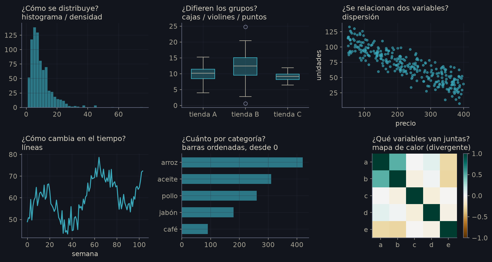
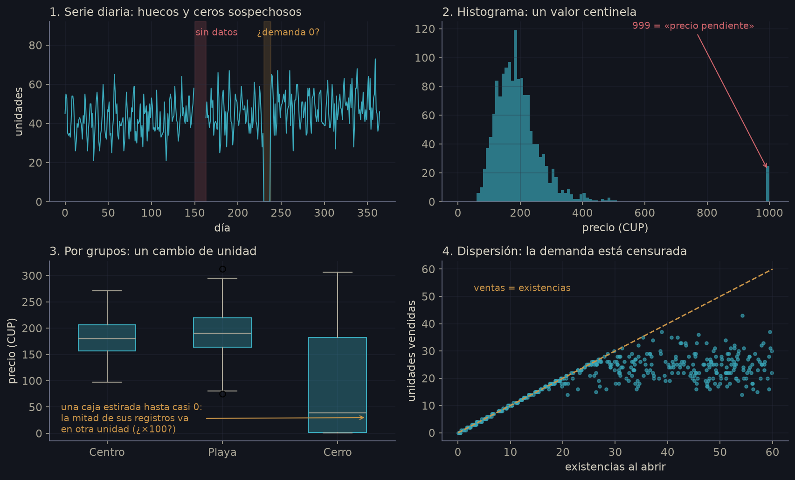

Objetivos. Al terminar serás capaz de:
- Elegir el gráfico a partir de la pregunta (distribución, grupos, relación, evolución, magnitud) y justificar la elección.
- Construir gráficos con la interfaz de objetos de matplotlib y con seaborn, con ejes, unidades y escalas honestas.
- Ejecutar un análisis exploratorio con una lista fija que encuentre problemas antes de modelar: centinelas, cambios de unidad, huecos, censura y fugas.
- Detectar cuándo un gráfico engaña y corregirlo.
Prerrequisitos. Conferencias 5 y 6. Estadística descriptiva (media, mediana, cuartiles, correlación), que marcaste como conocida.
§ 1Los resúmenes no bastan
Cuatro conjuntos de 11 puntos tienen la misma media de (9), la misma varianza de (11), la misma media de (7,50), la misma varianza de (4,12), la misma correlación (0,816) y la misma recta de regresión, . Antes de verlos: ¿ajustarías el mismo modelo a los cuatro? Comprométete y después pulsa el botón.
Esta visualización necesita JavaScript.
Anscombe construyó estos datos para demostrar la razón de ser de esta conferencia: un modelo, una métrica o un resumen pueden ser idénticos para datos opuestos. Solo mirándolos se ve que en II hace falta un término cuadrático, que en III un punto arrastra la recta y que en IV toda la «correlación» la fabrica una sola observación. Ninguna métrica de validación te lo habría dicho. Y en un proyecto de portafolio, el análisis exploratorio es lo que demuestra que entiendes el problema, no solo que sabes llamar a fit.
§ 2Matplotlib: la interfaz de objetos
Matplotlib tiene dos interfaces. La de estado (plt.plot, plt.title) actúa sobre «la figura actual» y confunde en cuanto hay varias. Usa siempre la de objetos:
import matplotlib.pyplot as plt
fig, ax = plt.subplots(figsize=(7, 4))
ax.plot(fechas, unidades, color="tab:blue", lw=1.5, label="diarias")
ax.plot(fechas, media7, color="tab:orange", lw=2, label="media móvil 7 días")
ax.set(title="Ventas de arroz, tienda Centro", xlabel="fecha", ylabel="unidades por día")
ax.legend()
fig.tight_layout()
fig.savefig("figuras/arroz.png", dpi=150)Definición 1 (anatomía). Una figura es el lienzo; contiene uno o varios ejes (Axes), cada uno un gráfico con su sistema de coordenadas, marcas, etiquetas y leyenda. fig, axs = plt.subplots(2, 2) crea una cuadrícula y devuelve un arreglo de NumPy de ejes (axs[0, 1], for ax in axs.flat:).
Lo mínimo de todo gráfico: un título que diga qué se ve, ejes con nombre y unidades, y leyenda si hay más de una serie.
seaborn construye sobre matplotlib y entiende el formato largo (conferencia 6): dices qué columna va en cada eje y cuál define el color o los paneles.
import seaborn as sns
sns.histplot(data=ventas, x="precio", hue="tienda", bins=40, element="step", ax=ax)
sns.boxplot(data=ventas, x="tienda", y="precio", ax=ax)
sns.scatterplot(data=ventas, x="precio", y="unidades", alpha=0.5, ax=ax)
sns.relplot(data=semanal, x="fecha", y="unidades", col="producto", col_wrap=3, kind="line")
sns.heatmap(tabla.corr(numeric_only=True), vmin=-1, vmax=1, cmap="BrBG", annot=True, ax=ax)Las funciones con ax= dibujan en ejes que tú creas; relplot, displot y catplot crean su propia figura con paneles (múltiplos pequeños: el mismo gráfico repetido por grupo, con los mismos ejes, para comparar de un vistazo).
§ 3Elegir el gráfico por la pregunta

| Pregunta | Gráfico | Alternativas | Evita |
|---|---|---|---|
| ¿Cómo se distribuye una variable? | histograma | densidad, ECDF, cajas | un histograma con 5 bins |
| ¿Difieren los grupos? | cajas | violines, puntos | barras con la media sola |
| ¿Se relacionan dos numéricas? | dispersión | hexbin con muchos puntos |
líneas que unen puntos sin orden |
| ¿Cómo cambia en el tiempo? | líneas | pequeños múltiplos por grupo | barras por día con muchos días |
| ¿Cuánto por categoría? | barras ordenadas, desde 0 | puntos | tartas de más de 3 sectores |
| ¿Qué variables van juntas? | mapa de calor de correlaciones | pairplot |
colores arcoíris |
Cuatro reglas de honestidad:
- Las barras empiezan en 0. La longitud de una barra es el valor; con el eje cortado, una diferencia del 3 % parece del 300 %. Las líneas y los puntos sí admiten el eje recortado: codifican posición, no longitud.
- Una escala por eje. Nunca dos ejes verticales con escalas distintas en el mismo gráfico: cualquier «cruce» es un artefacto de las escalas elegidas. Dos magnitudes, dos paneles.
- Escala logarítmica para cola larga (precios, ingresos) y para magnitudes que varían en órdenes de magnitud. Dilo en el eje.
- El color significa algo, y siempre lo mismo: una categoría, una magnitud (un solo tono, de claro a oscuro) o un signo (divergente, con el neutro en 0). Nunca el arcoíris (
jet): crea fronteras que no existen.
Tres trampas frecuentes: el sobretrazado (con 100 000 puntos, una dispersión es una mancha: alpha, una muestra o hexbin); las medias sin dispersión (barras con la media esconden si los grupos se solapan por completo); y los bins del histograma, que cambian la historia:
Esta visualización necesita JavaScript.
RespuestaAntes de seguir: ¿qué gráfico harías para (a) ¿las ventas del sábado son mayores?; (b) ¿las tiendas con más existencias venden más?; (c) la evolución semanal de los 5 productos principales en 2025?
(a) Cajas de las ventas diarias por día de la semana: comparación entre 7 grupos mostrando la dispersión. (b) Dispersión de existencias frente a ventas, un punto por tienda y día (cuidado con la censura, sección 5). (c) Líneas: cinco en un panel si se distinguen, o cinco pequeños múltiplos con el mismo eje si se cruzan mucho.
§ 4El análisis exploratorio como procedimiento
Definición 2 (análisis exploratorio de datos). El EDA (Tukey, 1977) es el examen sistemático de unos datos antes de modelarlos, con dos fines: entender el fenómeno y encontrar problemas (errores, sesgos, fugas) que invalidarían un modelo.
Un EDA no es «hacer muchos gráficos»: es responder una lista en orden y escribir las respuestas.
- La pregunta y la unidad. ¿Qué quieres predecir o entender? ¿Qué es una fila? ¿Qué filas deberían existir (todos los días, todos los productos)?
- Estructura y calidad: la rutina de la conferencia 5.
- Cada variable: histograma de cada numérica (en log si tiene cola larga), barras de cada categórica. Centinelas, picos raros, imposibles.
- El tiempo: la serie completa con el calendario relleno. Huecos, saltos de nivel, ceros sospechosos.
- Por grupos: lo mismo por tienda, producto o fuente. Un problema de un solo grupo se esconde en el total.
- Relaciones: cada variable frente a la objetivo; correlaciones entre predictoras.
- Fugas: variables que predicen demasiado bien, que solo se conocen después del hecho, identificadores con señal, duplicados que caerían en entrenamiento y prueba a la vez.
- Conclusiones escritas: hallazgos y decisiones (qué se corrige, qué se descarta, qué se pregunta).
El punto 8 es el que convierte unos gráficos en un análisis.
§ 5Ejemplo resuelto: el EDA de una mipyme
Una tienda te da un año de ventas diarias de un producto, el registro de 1500 precios en tres tiendas y las existencias al abrir de 400 días; quiere predecir la demanda. Antes de leer la solución, mira la figura y busca cuatro problemas, uno por panel. Los datos son sintéticos; los problemas, frecuentes en la vida real.

RespuestaLos cuatro problemas y sus decisiones
Panel 1 (el tiempo). Un hueco de 13 días (150-163) sin registro: no son ceros, son días desconocidos; decisión: marcar el periodo y no imputarlo. Y ocho días seguidos con exactamente 0 en un producto que vende unas 40 al día: la probabilidad de eso por azar es despreciable; casi seguro es una rotura de inventario. Decisión: esos ceros no son demanda cero; preguntar y, si se confirma, tratarlos como demanda desconocida. Sin rellenar el calendario, el hueco quedaría unido por una recta y no se vería.
Panel 2 (cada variable). Una barra aislada en 999: value_counts dice que son exactamente 25 ventas. Decisión: centinela («precio pendiente») → faltante.
Panel 3 (por grupos). Centro y Playa rondan 180-190 CUP; la caja de Cerro se estira desde casi 0: la mitad de sus registros está en otra unidad (en torno a 1,85 en vez de 185). El histograma global no lo mostraba. Decisión: preguntar, corregir con una regla documentada para esa tienda y ese periodo, y comprobar que la caja corregida se parece a las demás.
Panel 4 (relaciones). Los puntos nunca superan la diagonal ventas = existencias, y muchos se apilan sobre ella: cuando había pocas existencias, se vendió todo; la demanda real pudo ser mayor. Es demanda censurada. Un modelo que trate «ventas» como «demanda» predecirá de menos justo en los días de más demanda. Decisión: marcar esos días como censurados (lo tratarás en Series temporales).
| Hallazgo | Evidencia | Decisión |
|---|---|---|
| 13 días sin registro | panel 1, isna() |
marcar; no imputar |
| 8 ceros seguidos | panel 1 | probable rotura de inventario; preguntar |
| 25 precios = 999 | panel 2, value_counts |
centinela → NaN |
| precios de Cerro ×100 | panel 3, groupby + cajas |
corregir con regla documentada |
| ventas ≤ existencias | panel 4 | demanda censurada: variable censurado |
Ninguno de estos problemas produce un error de Python. Todos producen un modelo peor que parece bueno.
En el panel 4, ¿qué patrón verías si la tienda nunca se quedara sin existencias, y por qué eso confirma que la acumulación sobre la diagonal es censura? --- Una nube centrada en la demanda media (unas 25 unidades) sin relación con las existencias y, sobre todo, lejos de la diagonal: las existencias nunca serían el límite. La acumulación justo sobre la diagonal significa que en esos días la cantidad vendida la decidió el inventario, no los clientes; la demanda verdadera es «al menos» ese valor. Eso es exactamente una observación censurada.
Compara con una respuesta modelo
§ 6Buscar fugas antes de modelar
La fuga de datos es el error más caro del ML: el modelo brilla en la evaluación y falla en producción. Muchas se ven en un EDA si se buscan a propósito:
- Una variable predice demasiado bien. Si una sola separa casi perfectamente las clases, pregunta si se conoce antes del hecho. Ejemplo: «fecha de devolución» para predecir si un pedido se devolverá.
- Identificadores con señal. Un número de factura asignado por orden puede correlacionarse con la etiqueta si el fenómeno cambió en el tiempo.
- Agregados con futuro. Una «media de ventas del producto» calculada con todo el año y usada para predecir enero.
- Duplicados entre entrenamiento y prueba: la prueba mide memoria, no generalización.
§ 7Un gráfico para publicar
En un portafolio, un reclutador mira cada gráfico diez segundos. Título con la conclusión, no con la variable («La demanda de arroz crece un 25 % en el año», no «Ventas frente a fecha»); solo lo necesario (sin bordes superior y derecho, rotulando las líneas en vez de leyenda si se puede); el contexto en gris y lo importante en color; letra legible y png a 150-200 ppp.
fig, ax = plt.subplots(figsize=(7, 3.5))
ax.plot(s.index, s, color="0.7", lw=1) # contexto, en gris
ax.plot(s.index, s.rolling(28).mean(), color="tab:blue", lw=2.5)
ax.axvspan(inicio_hueco, fin_hueco, color="tab:red", alpha=0.15)
ax.text(inicio_hueco, s.max(), "sin registros", color="tab:red", va="top")
ax.spines[["top", "right"]].set_visible(False)
ax.set(title="La demanda de arroz crece un 25 % en el año", ylabel="unidades por día")§ 8Errores típicos
| Error | Síntoma | Arreglo |
|---|---|---|
| Confiar en resúmenes numéricos | «r = 0,8: hay relación lineal» | grafica siempre |
| Barras que no empiezan en 0 | diferencias exageradas | eje desde 0, o puntos |
| Dos ejes y con escalas distintas | cruces sin significado | dos paneles |
| Bins arbitrarios | modas ocultas o ruido | varios; bins="fd" |
| Graficar sin rellenar el calendario | huecos invisibles | reindex antes |
| Mirar solo el total | problemas de un grupo ocultos | por grupos, múltiplos pequeños |
| EDA sin conclusiones escritas | gráficos que nadie interpreta | tabla de hallazgos y decisiones |
Ideas que te llevas
- Resúmenes idénticos, datos opuestos: mira antes de modelar.
- La pregunta elige el gráfico. Barras desde 0; una escala por eje; log para cola larga; color con significado.
fig, ax = plt.subplots()y seaborn sobre tablas largas; múltiplos pequeños para comparar grupos.- EDA = lista fija + conclusiones escritas. Los problemas graves no dan error.
§ 9Preguntas de recuperación
- ¿Qué demuestra el cuarteto de Anscombe y qué consecuencia práctica tiene?
- ¿Qué gráfico usarías para comparar la distribución de precios entre 5 tiendas, y por qué no barras con la media?
- ¿Por qué las barras deben empezar en 0 y las líneas no necesariamente?
- Enumera los ocho puntos de la lista del EDA.
- ¿Cómo se ve la demanda censurada en ventas frente a existencias?
RespuestaRespuestas
- Que datos con los mismos resúmenes pueden tener estructuras opuestas: hay que graficar antes de modelar o concluir.
- Cajas o violines (con los puntos si son pocos): las barras con la media esconden la dispersión y el solapamiento.
- La barra codifica con su longitud, proporcional al valor solo desde 0; la línea codifica con la posición.
- Pregunta y unidad; estructura y calidad; cada variable; el tiempo; por grupos; relaciones; fugas; conclusiones escritas.
- Los puntos nunca superan la diagonal y muchos se apilan sobre ella.
§ 10Lecturas
- Data Carpentry, «Análisis y visualización de datos usando Python», en español, CC BY 4.0: episodio 9 («Entrada de datos y visualización: Matplotlib y Pandas»).
- Matplotlib, «Quick start guide» (
https://matplotlib.org/stable/users/explain/quick_start.html), en inglés. - seaborn, «User guide and tutorial» (
https://seaborn.pydata.org/tutorial.html), en inglés. - Anscombe, F. J. (1973). «Graphs in Statistical Analysis». The American Statistician, 27(1), 17-21.